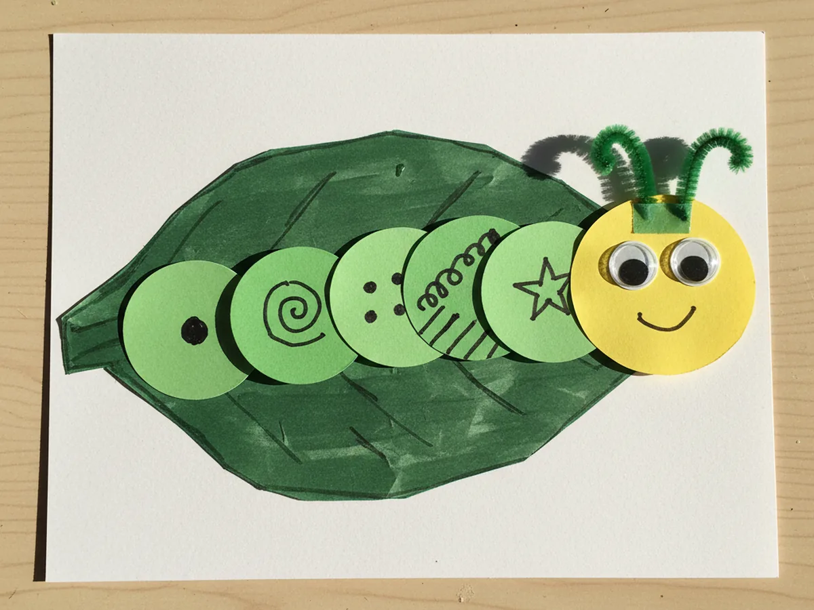
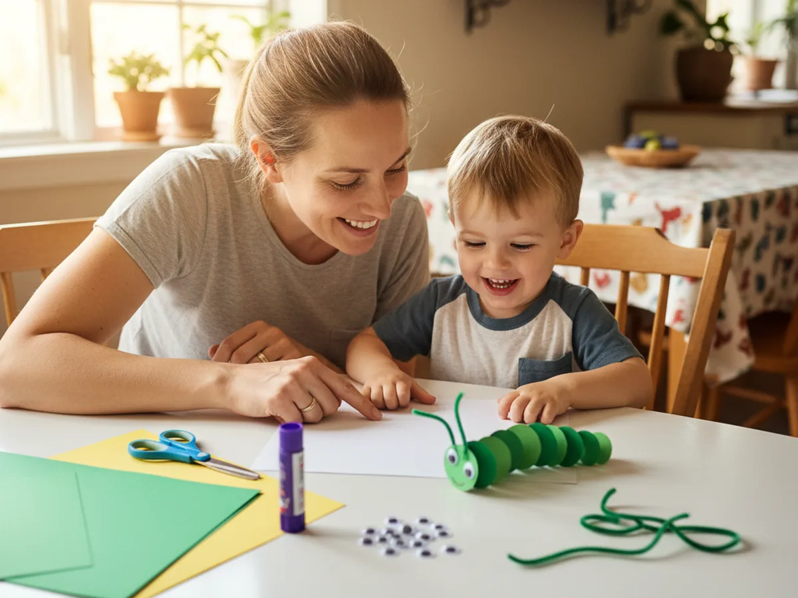
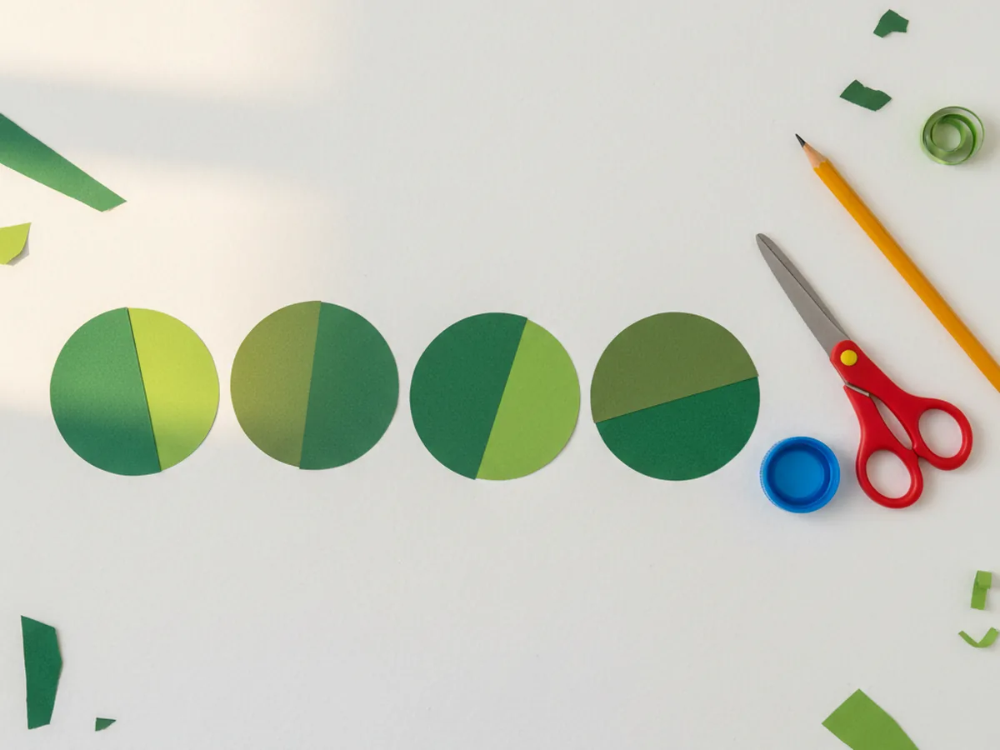
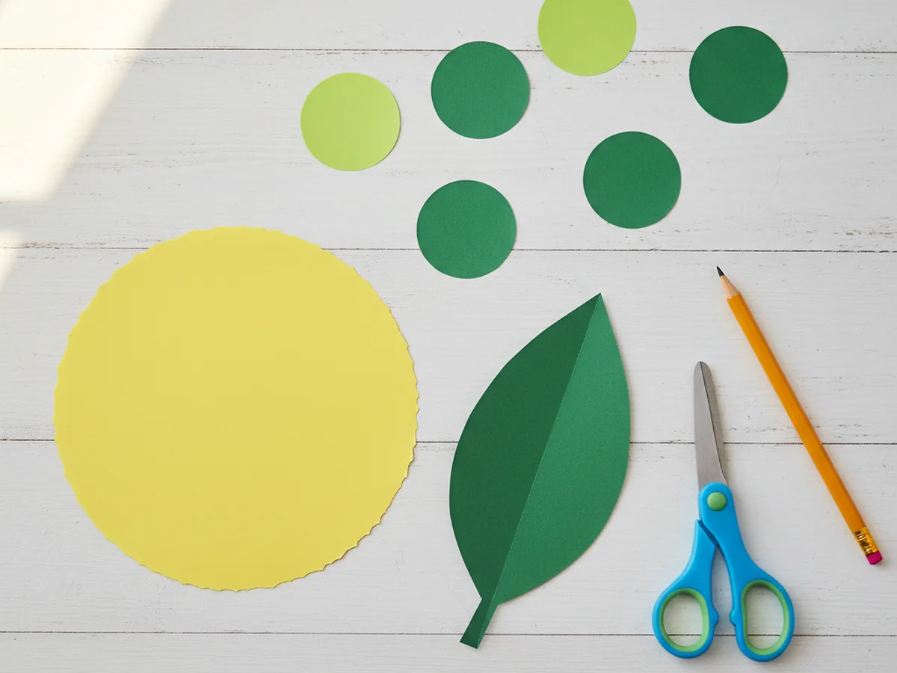
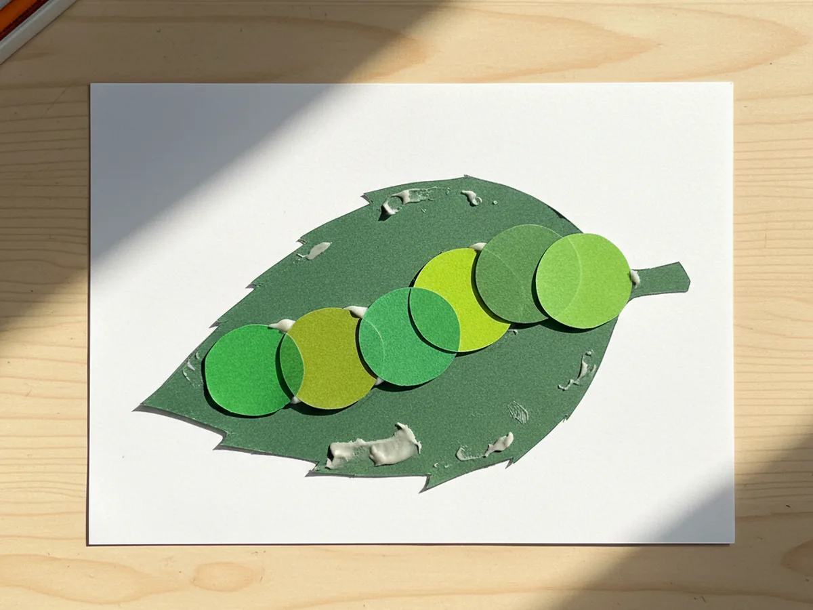
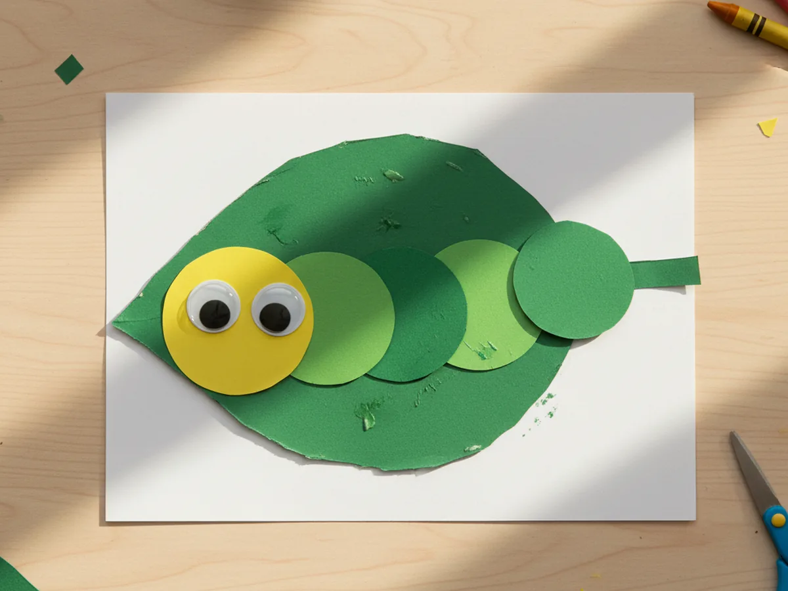
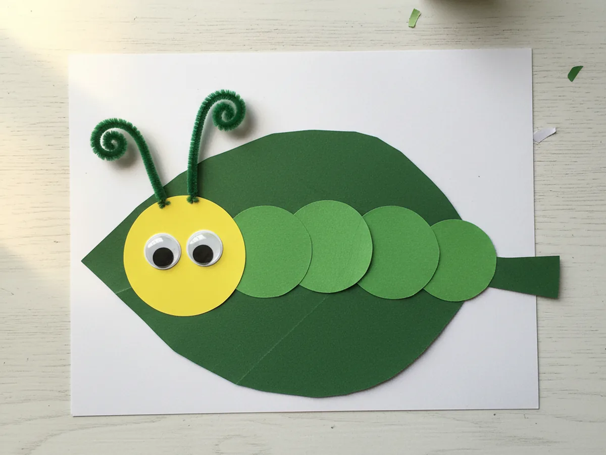
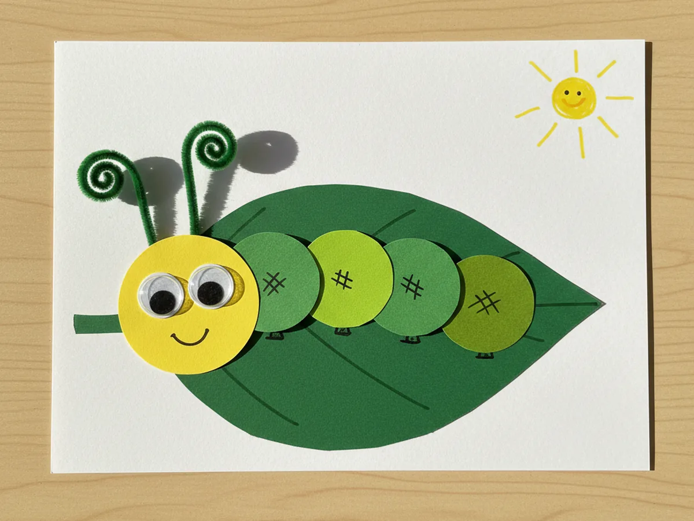

If your little one is in that sweet phase where every bug is the most exciting thing in the world, this caterpillar paper craft is going to be a hit. With a few green construction paper circles, a yellow head, two googly eyes, and a quick swirl of pipe cleaner antennae, you can make a cheerful crawling caterpillar in about thirty minutes. No paint, no fuss, no setup that takes longer than the craft itself. 🐛
What makes this easy caterpillar paper craft so lovable is how forgiving it is. The body is just a row of circles, so nothing has to be perfect. Each circle can be a slightly different shade of green, a slightly different size, or a tiny bit lopsided, and the caterpillar still turns out adorable. It is the kind of craft that gives your child total freedom to be creative without you having to worry about how the final result will look.
Why Kids Love This Craft
Caterpillars feel friendly to kids in a way that bigger or wigglier critters do not. They are small, slow, and a little bit silly, and most children meet their first one in the backyard with wide eyes and a big smile. Turning that real-world wonder into a caterpillar paper craft taps right into that natural curiosity, and the moment your child sees those googly eyes go on, the caterpillar suddenly has a personality.
This simple caterpillar paper craft is also great for fine motor skills. Tracing and cutting circles builds early scissor control, gluing each circle down in a row teaches careful placement, and twisting the antennae practices little finger strength. Even toddlers who cannot quite cut yet can press circles into place and stick the googly eyes on the head, which feels just as exciting to them as doing the whole thing alone.
And then there is the storytelling magic. Once the caterpillar is finished, kids almost always want to give it a name, build it a leaf home, and walk it across the kitchen table. The caterpillar craft stops being a project and becomes a tiny new friend, which is exactly the kind of warm, screen-free moment that makes a quiet afternoon feel special. 💚

What You'll Need
Here is everything you need for this caterpillar paper craft tutorial. Pull the supplies out before you call your child over so the project starts the moment they sit down.
- Crayola Construction Paper (240 sheets, assorted colors), gives you several shades of green plus the yellow you need for the head.
- Neenah Heavyweight White Cardstock (250 sheets), sturdy background that holds the body circles flat.
- Fiskars Pointed-Tip Kids Scissors, perfect for small hands cutting paper circles.
- Elmer's Disappearing Purple Glue Sticks (30 pack), washable and dries clear, ideal for sticking the body segments down.
- Upins Self-Adhesive Googly Eyes (1000 pcs, assorted sizes), the easiest way to give your caterpillar a face with no extra glue needed.
- Creativity Street Chenille Pipe Cleaners (100 pieces, assorted), for the curly antennae that bring the caterpillar to life.
- Crayola Broad Line Markers (10 classic colors), for the smile, dots on the body, and any extra finishing touches.
- A pencil and a small round object (a bottle cap or jar lid) for tracing circles.
Step-by-Step Instructions
This caterpillar paper craft moves through six gentle steps that build on each other. Take your time, follow along together, and let your child help with as much as they can comfortably handle.
Step 1: Trace and Cut the Body Circles
Start with two or three sheets of green construction paper in slightly different shades if you have them. Use a bottle cap or a small jar lid as a tracing template and let your child trace six circles, each about two inches across. Then cut the circles out one by one. Mixing two shades of green gives the caterpillar a sweet, naturally varied look, but a single shade works just as nicely.

Step 2: Cut the Yellow Head and a Green Leaf
Now grab a sheet of yellow construction paper and trace one circle that is just a little bit bigger than the green body circles. This will be the caterpillar's head, and the slightly larger size makes it look the friendliest. Cut it out and set it aside.
From a leftover piece of darker green paper, free-hand a simple leaf shape about the size of your hand. The leaf will sit behind the caterpillar like a cozy little resting spot. There is no need to draw anything fancy, a wide oval with a pointed tip is plenty.

Step 3: Glue the Leaf and Body Circles in a Row
Take a sheet of white cardstock and place it in front of your child in landscape orientation. Add a few swipes of glue stick to the back of the green leaf and press it onto the cardstock toward the bottom-center. This is the caterpillar's resting spot.
Now glue the six green body circles in a slightly curving row across the leaf, letting each circle slightly overlap the previous one. A gentle wave or arch looks much cuter than a perfectly straight line, so encourage your child to make the path bumpy and fun. Press each circle firmly so it sticks well to both the leaf and the cardstock.

Step 4: Add the Head and Googly Eyes
Pick up the yellow head circle, add a generous swipe of glue to the back, and press it firmly to one end of the green body row. The head should slightly overlap the first body circle so the caterpillar feels connected and complete. Hold it down for a few seconds while the glue grabs.
Now for the best moment of the whole caterpillar paper craft. Peel the backing off two googly eyes and let your child place them on the yellow head. Encourage them to position the eyes wherever they want. Sometimes slightly crooked eyes give the caterpillar the most character. The moment those eyes go on is usually when your child squeals with joy. 😊

Step 5: Add the Pipe Cleaner Antennae
Cut a single pipe cleaner in half so you have two equal pieces. Curl the top of each piece into a small loose spiral by wrapping the end around your finger or a pencil tip. Add a generous dot of glue stick to the bottom of each pipe cleaner and press them onto the very top of the yellow head, just above the googly eyes. Let them point upward and outward like two tiny springy antennae.

Step 6: Add Finishing Details with Markers
Set the caterpillar flat for a minute so the glue can settle. Then bring out the markers and let your child draw a small smile on the yellow head and a tiny dot or pattern on each green body circle. Some kids will go for matching dots, others for stripes or hearts on every segment, and both look adorable.
If you have any leftover paper, this is also a sweet moment to add little extras to the scene like a sun in the corner, a flower beside the leaf, or your child's name in friendly letters. Once the marker is dry, the caterpillar paper craft is officially ready to be displayed on the fridge, taped to a bedroom wall, or sent in the mail to a grandparent. ✨

Variations to Try
Handprint Caterpillar: Skip the traced circles and trace your child's hand on green paper instead. Cut out two or three handprints and overlap the fingers across the page to form a wavy caterpillar body. The result is a sweet keepsake that captures their hand size at this exact age.
Tissue Paper Mosaic Caterpillar: Draw the caterpillar body shape directly on cardstock and let your child fill it in by gluing torn pieces of green tissue paper inside the outline. This version is wonderful for toddlers who are not quite ready for scissors and gives the caterpillar a soft, textured look.
Butterfly Life Cycle: Turn the project into a mini learning activity by making the caterpillar on one side of the page and adding a paper cocoon and a simple paper butterfly beside it. It becomes a cheerful little life-cycle poster your child can talk through with you.
Final Thoughts
This caterpillar paper craft is one of those beautifully simple projects that asks very little of you and gives back a lot. The supplies are easy, the steps are forgiving, and the finished caterpillar always turns out cute no matter how wobbly the circles or how lopsided the eyes. Best of all, it is the kind of activity that fills a quiet afternoon with giggles, tiny conversations, and the sweet pride of seeing your child hold up their finished friend with shining eyes.
If your little one finishes their first paper caterpillar, I would love to see it. Save this article on Pinterest so other craft-loving mamas can find it easily. Happy crafting!
More Crafts You'll Love
If your child loved this caterpillar paper craft, they will adore these other little critter projects too: